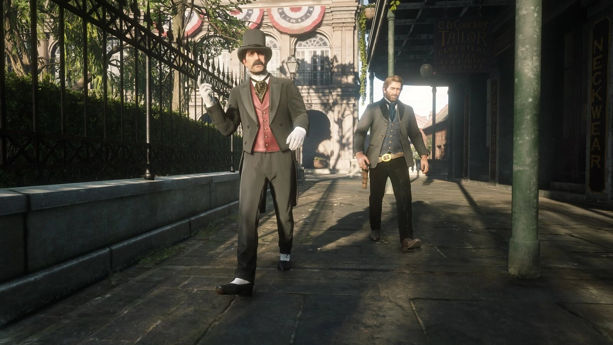
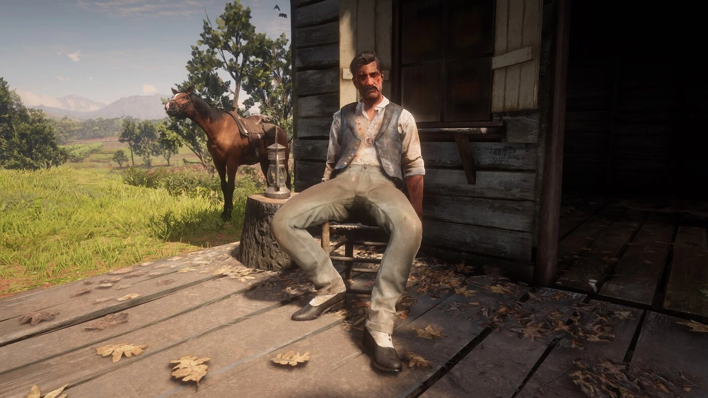

Character · Van der Linde gang
Josiah Trelawny
Josiah Trelawny is a con man, magician and fixer loosely attached to the Van der Linde gang in Red Dead Redemption 2. Charming and theatrical, he sets up scores and solves problems but keeps the outlaw life at arm's length.
Unlike the others, Trelawny keeps a secret family he protects, and he drifts in and out of the gang rather than living in the camp full time.
- Status
- Alive (survives)
- Nationality
- British
- Affiliation
- Van der Linde gang (associate)
- Role
- Con man, magician, fixer
- Games
- Red Dead Redemption 2
Biography
The gang's fixer
Trelawny arranges opportunities for the gang, from confidence schemes to freeing captured members. Arthur works several jobs at his side, especially around Saint Denis.
A man apart
Trelawny is careful never to be fully swallowed by the gang. He has a wife and sons he keeps hidden from the outlaw world, and that caution is part of why he lives to see the other side of the story.
Personality
Witty, elegant and self-preserving, Trelawny is a performer who talks his way into and out of trouble. His loyalty is real but always weighed against his own survival and his family.
Relationships

Arthur Morgan
His most frequent partner in schemes, especially the cons around Saint Denis.

Dutch van der Linde
The gang leader Trelawny works for at a deliberate distance, never fully one of the camp.

Hosea Matthews
A fellow schemer whose taste for the con Trelawny shares.

John Marston
A gang member alongside whom Trelawny occasionally works when his plans need extra hands.
Fate
Trelawny is one of the gang members who survives the events of Red Dead Redemption 2, slipping away before the collapse to return to the family he kept hidden.
Behind the scenes
Trelawny appears in Red Dead Redemption 2 (2018) as a recurring associate rather than a full camp member, a role that suits his careful distance from the gang's fate.
Trivia
- He is a magician and con artist.
- He keeps a secret wife and sons.
- He survives the events of the game.
Gallery
